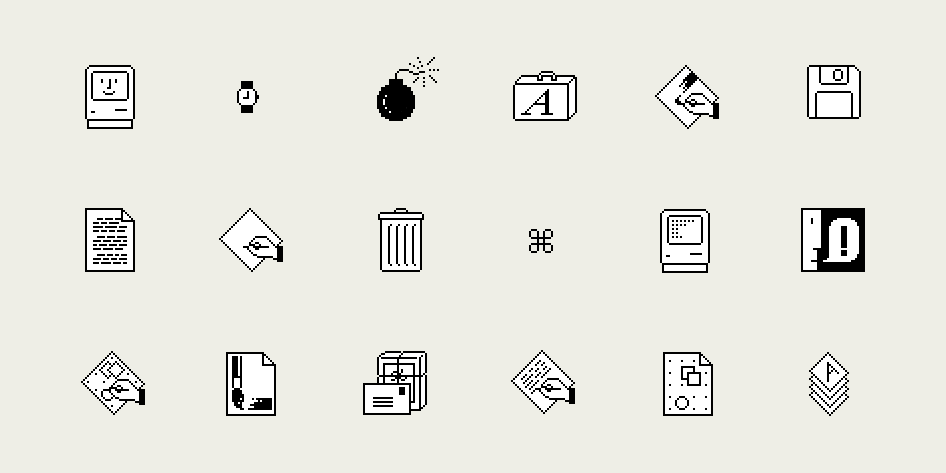
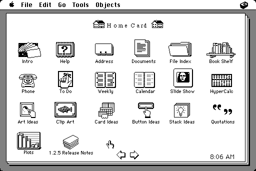

1980 - Hypercard
1980 markierte das Jahr, in dem die Technologie eine neue Richtung einschlug. Apple stellte Hypercard vor, ein revolutionäres Programm, das es den Nutzern ermöglichte, interaktive, visuelle Inhalte zu erstellen, die miteinander verknüpft waren.
Mit Hypercard konnte jeder ohne tiefgehende Programmierkenntnisse einfache, aber leistungsstarke Programme erstellen. Dies war ein Meilenstein, da es das Konzept des Hypertexts in die breite Öffentlichkeit brachte und den Grundstein für das Web, wie wir es heute kennen, legte.
Hypercard war ein digitales Experiment, das nicht nur für die Computerwelt von Bedeutung war, sondern auch den Weg für die Entwicklung von Webseiten und interaktiven Medien ebnete. Es war das erste Beispiel für eine Nutzeroberfläche, die auf einer verknüpften Struktur basierte – ähnlich wie das spätere World Wide Web, das 1990 entwickelt wurde.
Es war in vielerlei Hinsicht ein "fundstück" aus der frühen Computergeschichte, das heute noch von Technikbegeisterten bewundert wird. Die Anwendung setzte auf einfache Grafiken, ASCII-Text und minimalistische Navigationselemente, die mit den damaligen Computern und Monitoreigenschaften kompatibel waren.
https://winworldpc.com/product/hypercard
Die Software war sehr beliebt auf den frühen Macintosh-Computern und beeinflusste viele später entwickelte interaktive Programme.
 https://lowendmac.com/2003/remembering-hypercard/1990 - World Wide Web
Das Jahr 1990 war ein Meilenstein der digitalen Revolution. Tim Berners-Lee stellte das World Wide Web vor.
Das World Wide Web machte Informationen zugänglicher als je zuvor. Es führte zu einem globalen Netz, das Menschen, Unternehmen und Ideen miteinander verbindet. In den folgenden Jahren wurden HTML, URLs und HTTP zum Standard, wodurch Webseiten weltweit erstellt und aufgerufen werden konnten.
Das Design von Webseiten in dieser Ära war minimalistisch, mit Fokus auf Funktionalität. Klare Strukturen, einfache Farbpaletten und grundlegende Typografie waren die Regel. Gleichzeitig legte das frühe Web den Grundstein für moderne Webdesign-Techniken, wie wir sie heute kennen.
Die Vision des World Wide Web war es, Informationen für jeden Menschen auf der Welt zugänglich zu machen. Diese Idee hat bis heute Bestand und beeinflusst, wie Technologien für Kommunikation und Wissen entwickelt werden.
2000 - Von Starr zu Dynamisch
Web Design 2000
Web design in 2010 was shaped by limited technologies, with Flash and simple CSS layouts dominating.
Hover Effects in 2000
In 2000, hover effects were simple and primarily used to highlight links and buttons.
Hover Effect
The hover effect enhances user experience by providing visual feedback on interaction.
Scroll Down
Parallax Effect
The Parallax Effect is a visual technique often used in web development to create depth and dynamism on websites. This technique simulates spatial movement by having different layers of content scroll at varying speeds. It gives the impression that the background is farther away than the foreground, resulting in an immersive user experience.
Parallax Effect
The Parallax Effect works by using CSS and JavaScript to control the scroll speed of specific elements. For example, a background might scroll more slowly than text or images in the foreground. This technique is often combined with fixed background images that appear "anchored" in depth while other content flows above them.
The style of the Parallax Effect is usually minimalistic yet impactful. High-resolution background images, ranging from stunning landscapes to abstract designs, play a central role. Combined with smooth transitions, subtle animations, and elegant typography, the Parallax Effect can significantly enhance the design of a website and guide the viewer's focus effectively.
Scroll Up
In 2010, the Parallax Effect became a pivotal trend in web design. During this time, developers started to challenge the static structure of traditional websites, creating dynamic and interactive designs that engaged users more deeply with the content. Websites utilizing the Parallax Effect became synonymous with innovation and creativity. Brands and designers used this technique to tell stories, showcase products, and create unforgettable experiences for their visitors.
The Parallax Effect left a lasting mark on the web design era of 2010 by elevating interactivity to new heights. This technique paved the way for immersive experiences and inspired numerous modern trends that continue to enrich web user experiences today.
2020 - Webdesign und Darkmode
Im Jahr 2020 wurde der Darkmode ein wesentlicher Bestandteil moderner Benutzeroberflächen. Er wurde entwickelt, um die Augenbelastung zu reduzieren, insbesondere bei längerer Nutzung von digitalen Geräten.
Webdesign-Trends konzentrierten sich auf minimalistische Ansätze, flache Designstile und den Einsatz von responsiven Layouts, die eine optimale Darstellung auf allen Geräten gewährleisten.